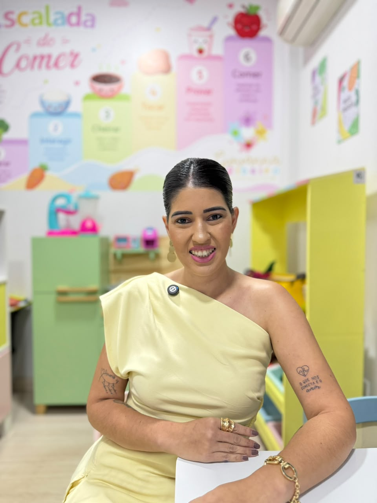

Nutrição infantil especializada.
Introdução alimentar, Avaliação nutricional infantil, Seletividade alimentar, Terapia Alimentar, Transtornos alimentares (TARE, compulsão alimentar).
- Domínio e experiência com crianças atípicas (Autismo, TDAH, T21)
- Abordagem com embasamento em ciência
- Atendimento personalizado, com Estratégias individualizadas
- Orientação Parental no âmbito alimentar - Consultoria para Pais
- Palestras em Educação Nutricional
- Oficinas Culinárias
Mais de 10 anos agregando na saúde alimentar!
Nossas Especialidades
Tudo o que sua família precisa para ter paz na hora da refeição.
Seletividade Alimentar e Dificuldades
Estratégias lúdicas para ampliar o repertório de crianças que recusam alimentos, respeitando o tempo e o limite de cada uma.
Saber mais
Introdução Alimentar
O primeiro contato com a comida deve ser mágico e seguro.
Nutrição TEA & TDAH
Abordagem específica para particularidades sensoriais e metabólicas.
Orientação Familiar com Acolhimento
Orientação familiar para estruturar a rotina alimentar, com manejos adequados nos momentos da alimentação. Possibilitando maiores evoluções.
Como Funciona?
O passo a passo para transformar a alimentação do seu filho.
Agendamento
Entre em contato e agende sua consulta.
Avaliação
Avaliação completa e individualizada.
Plano Alimentar
Plano alimentar adequado às necessidades do seu filho.
Acompanhamento
Acompanhamento próximo e apoio à família.

Dra. Giovanna Ribeiro
Nutricionista Infantil CRN - 13.976
Transformando pratos em momentos inesquecíveis de carinho e saúde.
Sou nutricionista especializada em Nutrição Infantil e Terapeuta Alimentar, apaixonada por acompanhar o desenvolvimento das crianças através da alimentação com acolhimento, respeito e ciência.
Meu propósito é ajudar famílias a construírem uma relação mais leve e positiva com a comida.
Cada criança é única, e o plano também é!
O que as famílias dizem
"A Dra. Giovanna transformou a relação da minha filha com a comida. Hoje ela come melhor e com muito mais variedade!"
- Mãe da Laura
"Acolhimento, cuidado e muito conhecimento! Só temos a agradecer por todo apoio e orientação."
- Mãe do Pedro
"O acompanhamento foi essencial para o desenvolvimento do meu filho. Profissional incrível!"